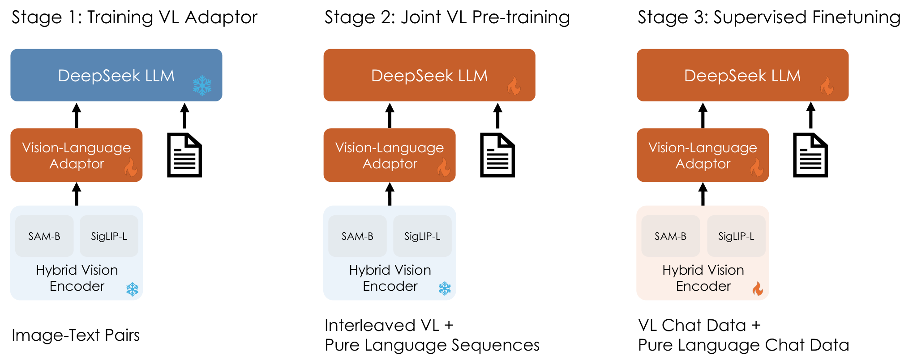
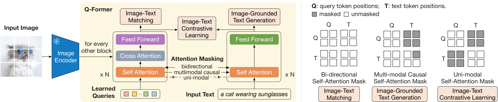
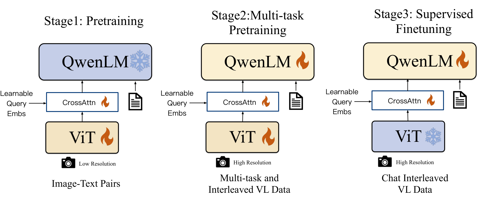

第 35 章 多模态预训练实战
💡 本章导读
第 15 章告诉你连接器有哪些设计，第 16 章告诉你指令数据怎么造，第 34 章告诉你数据从哪来——本章把这三块拼成一台能跑起来的训练机器：从"一筐图文对"出发，经过模态对齐预训练 → 端到端指令微调 →（可选）偏好对齐三个阶段，产出可对话的多模态大模型（MLLM）。这是全书的"核心大章"之一：既有可复现的超参数配方与显存预算算式，也有从零构建迷你 LLaVA（CLIP + TinyLlama + LoRA）的约 150 行核心代码，还有一份"失败模式诊断手册"——读完后你应当能独立规划一次从零的多模态预训练，并知道每个环节的"翻车点"与"体检指标"。
1.三阶段范式总览：从图文对到对话模型的主干道
2023–2026 年间，几乎所有开源 MLLM——LLaVA、Qwen-VL（arXiv:2308.12966）、InternVL（arXiv:2312.14238）、MiniCPM-V（arXiv:2408.10537）、DeepSeek-VL（arXiv:2403.05525）——的训练流程都收敛到同一个三阶段范式：阶段 1 模态对齐预训练（冻结语言模型，训练投影/连接器，用亿级到十亿级图文对学会"看"）、阶段 2 端到端指令微调（解冻 LLM 或用 LoRA，用百万级指令数据学会"按指令行事"）、阶段 3 偏好对齐（可选，用 RLHF/DPO 学会"答得让人满意"）。三个阶段的划分不是历史巧合，而是第一性原理下的必然分治：视觉与语言两个模态的联合分布太难一步学到位，把它拆成"先学翻译层、再学任务、最后学品味"，每一阶段的可学习目标都更小、数据都更对口。
为什么阶段 1 必须存在？预训练 LLM 拥有强大的语言先验，但它的词嵌入空间里没有任何"图像 token 的位置"。若一开始就端到端训练，随机初始化的投影器输出的视觉向量对 LLM 而言是"噪声前缀"——LLM 会迅速学会忽略它（语言损失总能靠文本先验降低，见第 8 节"视觉旁路"），这个"忽略"一旦定型就很难逆转。阶段 1 的本质是给视觉 token 争取"生存权"：在冻结 LLM 的条件下，把投影器训练到 LLM 无法忽略的程度。冻结 LLM 还有两个工程红利：优化器状态只与可训参数成正比（显存公式见第 6 节），以及语言能力零损失（LLM 权重一个字节都没动）。为什么阶段 2 必须存在？阶段 1 的数据是 caption 式的"陈述句"，模型只会"看图说话"，不会"看图答题"——指令跟随能力必须靠指令数据激活（第 16 章的 GPT-4 自指令革命）。为什么阶段 3 是可选的？它不新增能力，只修正分布——幻觉抑制（第 37 章）与风格校准，性价比取决于产品需求。

| 阶段 | 要解决的问题 | 数据（量级） | 可训参数 | 学习率量级 | 典型 epoch |
|---|---|---|---|---|---|
| 1 对齐预训练 | 视觉 token 获得被 LLM 使用的"生存权" | 图文对（0.5–10 亿；学术复现 0.5–200 万精选） | 仅连接器（0.1%–2%） | 1e-3（MLP 投影）/ 2e-5（线性） | 1 |
| 2 端到端 SFT | 指令跟随、问答、推理、定位 | 指令数据（100 万–1000 万条） | 投影 + LLM（全参或 LoRA）；视觉塔默认冻结 | 2e-5（全参）/ 1e-4–2e-4（LoRA） | 1–3 |
| 3 偏好对齐 | 幻觉抑制、风格校准、安全 | 偏好对（1 万–10 万组） | 同阶段 2（lr 缩小 1–2 个量级） | 5e-7–1e-6 | 1 |
使用这张表的方式：训练前先"对号入座"——你手里是什么量级与质量的数据、显存预算多少、要解决什么问题，就落在哪一行。三个阶段最大的共同错误是越界：用阶段 1 的数据与学习率做阶段 2 的事（模型只会说 caption 腔），或用阶段 2 的大学习率做阶段 3 的事（偏好对齐把模型训崩，第 37 章有血泪案例）。阶段间交接时必须检查的三件事：①权重复制是否完整（阶段 1 产出的连接器权重是否正确载入阶段 2）；②数据管线是否切换（caption 格式 → 对话格式）；③学习率与 warmup 是否重置。任何一件忘了做，表现都是"阶段 2 loss 从异常高的起点开始"。
2.阶段 1：模态对齐预训练——数据、目标与冻结策略
阶段 1 的全部工作可以概括为一句话：在冻结一切大件的前提下，让连接器学会把视觉特征翻译成 LLM 能消费的 token。但它内部有三个关键决策，每一个都值得用一节的篇幅讲透：喂什么数据（2.1）、优化什么目标（2.2）、冻结哪些部件（2.3）。
2.1 数据：量的下限与质的上限。阶段 1 的经典配方来自 LLaVA（arXiv:2304.08485）：用 LCS-558K——从 LAION/CC/COCO/Visual Genome 中筛选的 55.8 万条概念密集 caption——训练 1 个 epoch 即可完成对齐。这给社区立了一个重要的锚点：对齐所需的图文对远比想象中少，质量远比数量重要。之后的实践分两条路线：轻量路线（LLaVA-1.5、MiniCPM-V）沿用"几十万到几百万重标注 caption"；工业路线（Qwen-VL 用十亿级图文对、BLIP-2 用 1.29 亿）先做大规模粗对齐再进入 SFT。两条路线的分野在第 34 章已经论证过：alt-text 弱标注时代，重标注（用强模型重写 caption，如 ShareGPT4V，arXiv:2309.17452）对"视觉信息进 LLM"的传导效率远高于堆量。学术复现的推荐配方：CC3M/SBU 子集 + ShareGPT4V 重标注 10%–30% 混入，总量 50 万–300 万——再多的边际收益通常不如把算力留给阶段 2。
数据配比上还有两个易被忽视的细节：其一，caption 长度分布要和 SFT 阶段的回答长度分布对齐——阶段 1 全用短 caption，阶段 2 突然要长回答，LLM 的输出长度先验会打架；其二，务必混入 5%–10% 的纯文本样本（或至少在阶段 2 混入），这是防止语言退化的保险丝（第 8 节）。2.2 目标函数见下一个 box-theory；2.3 冻结策略是本节的精华，先看梯度流的第一性原理。
📐 理论推导：阶段 1 的目标函数族——ITC、ITM 与生成式的分工
记号：图像 $x$ 经视觉编码器得特征 $v=E_v(x)$（冻结，$\theta_v$ 固定），连接器 $P$（参数 $\theta_P$）输出视觉 token 序列 $z=P(v)$；文本 $y=(y_1,\dots,y_T)$。三类目标对应三种"对齐观"：
① ITC（图文对比，Image-Text Contrastive）——对齐的是全局表示。对 batch 内 $N$ 对图文，InfoNCE 双向损失（第 12 章的 CLIP 目标在连接器上的移植）：
其中 $s(v_i,t_j)$ 为归一化嵌入的点积，$\tau$ 为温度。它教连接器"整图↔整句"的粗粒度对应，信号强但分辨率粗（一个图 token 序列被压成一个向量参与损失）。
② ITM（图文匹配，Image-Text Matching）——对齐的是细粒度交互。把 $(v_i, t_j)$ 拼接过融合编码器，输出"匹配/不匹配"二分类 logit，用二元交叉熵训练。它的价值在难负例（batch 内与正例语义相近的图文对），迫使模型注意词序与物体属性的细节（"狗追猫"≠"猫追狗"）。
③ 生成式（Captioning / ITG）——对齐的是语言模型的消费接口。视觉 token 作为前缀，文本用标准自回归交叉熵：
其中 $p_\phi$ 是冻结 LLM。它不要求连接器输出"检索友好的向量"，而是要求输出"LLM 顺着能往下说的表示"——这正是 LLaVA 系只选 ③ 的原因：下游用法是对话生成，不是检索。BLIP-2 的 Q-Former 阶段 1 则三者混用 $\mathcal{L}=\lambda_1\mathcal{L}_{\mathrm{ITC}}+\lambda_2\mathcal{L}_{\mathrm{ITM}}+\lambda_3\mathcal{L}_{\mathrm{gen}}$（经验值 $\lambda$ 皆为 1 或 0.5 起步），因为 Q-Former 要同时服务检索与生成两种接口。选择原则：接口决定目标——只做对话就用生成式，要检索能力就加 ITC，要细粒度 grounding 就加 ITM。

2.3 冻结策略：LLaVA 的经典消融与梯度流第一性原理。阶段 1 可训部件的选择空间是三维的：视觉塔训不训、LLM 训不训、连接器（必训）。LLaVA 论文给出的经典结论是：只训投影层（线性 MLP），ViT 与 LLM 全冻结，558K 数据、1 个 epoch 即完成对齐；对比实验中把 LLM 一并解冻，不仅收益甚微，还引入语言能力退化与额外的显存开销。为什么"最小冻结"反而是最优解？用梯度流的语言说清楚。
损失只对 $\theta_P$ 求更新；$\theta_v,\theta_\phi$ 的梯度不计算、不存储、不更新。但注意一个反直觉的细节：反向传播仍然要"穿过"冻结的 LLM 激活——梯度要从损失层一路回传到连接器，途经的所有 LLM 层激活必须被缓存（或重计算）。所以冻结省的是优化器状态与参数梯度（显存大头，第 6 节算式），不是激活显存——这正是"阶段 1 显存没有小到零"的原因，也是激活检查点（gradient checkpointing）在阶段 1 就该开启的原因。
| 策略 | 可训参数 | 优点 | 风险 / 代价 | 适用场景 |
|---|---|---|---|---|
| 只训连接器（LLaVA 默认） | ~1% | 语言零损伤、显存最小、558K 数据即可对齐 | 视觉表达能力受限于冻结特征；对齐上限低 | 学术复现、单卡预算、CLIP 特征质量好时 |
| 连接器 + 视觉塔（Qwen-VL 阶段 1） | ~10% | 视觉特征适配任务域（OCR/文档受益最大） | lr 稍大即损坏 CLIP 预训练特征；需更大 lr 隔离（见第 6 节配方） | 视觉塔与数据域差异大（医学/遥感/文档） |
| 连接器 + LLM | ~100% | LLM 主动适应视觉前缀，收敛快 | 语言退化、过拟合 caption 分布、显存爆炸 | 数据 ≥ 十亿级且学习率压得很低时（Qwen-VL 阶段 2 前置） |
| 全解冻 | 100% | 理论上限 | 小数据下全是坏处：灾难遗忘 + 显存不可承受 | 基本只在工业级数据量下出现（作为阶段 2 出现） |
📄 论文精读：Visual Instruction Tuning（LLaVA，arXiv:2304.08485）
历史定位：LLaVA（NeurIPS 2023）不是效果最强的模型，却是把 MLLM 训练成本打下一个数量级的那一篇——它证明了"CLIP + 线性投影 + 冻结 LLM"的最简结构，配上 GPT-4 生成的指令数据，就能获得多模态对话能力。整个预训练只用 8×A100 级别的资源。两阶段设计：阶段 1 在 LCS-558K（LLaVA/CC/COCO/VG 的概念子集，GPT-4 辅助重写）上只训线性投影层，1 epoch、lr 2e-5、batch 32；阶段 2 用 158K 条 GPT-4 生成的视觉指令数据（58K 对话 + 23K 细粒度描述 + 77K 复杂推理）端到端微调，3 epochs。为什么敢冻结 LLM：论文的分析指出，指令数据里 LLM 要学的是"任务格式"（怎么答题），视觉信息经投影注入后语言部分几乎不需要动——冻结反而保住了语言先验。可迁移的三个结论：①对齐数据"少而精"可行（55.8 万对足够）；②指令数据的三类构成（对话/描述/推理）缺一不可，去掉复杂推理类后推理能力显著下降；③视觉 token 用"平均池化成 1 个 token"会明显掉分，保留全部 patch token 是低成本高收益的选择——它奠定了后来 LLaVA-1.5（arXiv:2310.03744）用 MLP 投影 + 336px + 全 patch token 的"强基线"配方（MME 1510.7，7B 级当时的最佳）。局限：分辨率 224px 制约 OCR；冻结视觉塔使细粒度感知依赖 CLIP 特征质量（第 14 章的 CLIP 盲点）。
⚠️ 陷阱：阶段 1 的三个"静默失败"
①lr 给错对象——沿用阶段 2 的 2e-5 训两层 MLP 投影，loss 几乎不动（可训参数太少、梯度太小），模型"没学会看"；MLP 投影（LLaVA-1.5 起）应配 1e-3 量级。②图像 token 位置错乱——对话模板里 <image> 占位符的替换索引与文本错位（一条样本多图时尤其常见），损失照常下降但视觉 token 全部被丢弃；用第 7 节的"置零测试"可以立刻暴露。③忘了 no_grad 冻结——只设 requires_grad=False 却没把前向包进推理模式，冻结塔的激活照样建图，显存一点没省。三个失败的共同点：loss 曲线都"看起来正常"，只有诊断能暴露（第 7 节）。
3.阶段 2：端到端视觉指令微调
阶段 2 把"看图说话"的模型变成"看图办事"的助手：数据从 caption 换成指令对话，可训参数从连接器扩展到 LLM（全参或 LoRA），学习率从 1e-3 量级降回 1e-5 量级。本节聚焦三个工程决策：数据怎么混、学习率与 epoch 怎么定、视觉塔解不解冻。
3.1 指令数据混合。LLaVA-1.5 的 665K 配方是公开可查的"起步标准"：LLaVA-Instruct 系（对话/描述/推理）打底，混入 VQAv2、GQA、OK-VQA、OCR 类（TextVQA 等）多任务学术数据；ShareGPT4V（arXiv:2309.17452）证明把其中 100K caption 换成 GPT4-Vision 重标注的高信息密度描述，描述能力显著提升。社区在此之上沉淀出一个稳健的混合模板（表 35-3）：通用对话与描述保持约半数以稳住"助手人格"，OCR/文档、数学推理、定位三类"硬能力"各占一成上下，多图/视频按产品形态加入。混合的纪律是"能力互斥时保证覆盖、能力相似时控制配比"——例如 OCR 与文档理解高度重叠，合计一成即可；通用对话与数学推理互斥，各自独立成块。
| 任务类型 | 占比 | 代表数据源 | 训练的能力 | 缺了会怎样 |
|---|---|---|---|---|
| 通用对话 / 开放问答 | 30%–35% | LLaVA-Instruct 150K 系列 | 助手人格、多轮一致性 | 说话腔调像 caption/VQA 机器 |
| 详细描述 | 15% | ShareGPT4V、GPT-4V 重标注 | 视觉细粒度、长文组织 | 描述干瘪、细节幻觉 |
| OCR / 文档 / 图表 | 10%–12% | TextVQA、DocVQA、ChartQA 衍生 | 文字感知、结构理解 | 小字必瞎、图表必崩（第 22 章） |
| 数学 / 逻辑推理 | 12%–15% | Geometry3K、MathVista 训练侧、CoT 数据 | 视觉思维链（第 44 章） | 看图列式即错 |
| 定位 / 计数 | 5%–8% | RefCOCO 系 box 格式（Qwen-VL 式） | 空间指代、grounding（第 21 章） | 坐标输出与语言脱钩 |
| 多图 / 视频 / 交错 | 8%–10% | NLVR2 衍生、交错图文 | 多图推理、时序 | 多图输入时灾难性退化 |
| 纯文本保底 | 5%–10% | 原 LLM SFT 数据抽样 | 语言能力防退化 | 纯文本评测掉分（第 8 节） |
3.2 学习率与 epoch 的经验法则。阶段 2 的超参数有一条清晰的"递减链"：全参微调 7B 用 2e-5（13B 及以上降到 1e-5），LoRA 用 1e-4–2e-4（可训参数少两个数量级，lr 大十倍），视觉塔若解冻再降十倍到 2e-6 量级。epoch 的选择与数据量成反比：百万级以上混合数据 1 epoch 足够（LLaVA-1.5 只训 1 epoch），50 万以下 2–3 epochs，指令数据小于 10 万条时超过 3 epochs 几乎必然模板过拟合（回答腔调固化、泛化崩塌）。warmup 取总步数 3%，cosine 衰减到峰值的一成。为什么 SFT 的 lr 必须比预训练小：LLM 权重已经在"好流形"上，SFT 要做的是小幅调整输出分布而非重建表示——大 lr 会把预训练知识冲掉（灾难遗忘），表现为"会答题了但胡话变多"。
3.3 视觉塔微调与否的权衡。默认冻结视觉塔的三个理由：①CLIP 特征是数亿对数据炼出的通用表示，百万级指令数据解冻它等于"用小数据破坏大数据学的表示"；②解冻视觉塔使 ViT 的激活也参与反向传播，显存与时间成本增加约三成；③视觉塔 lr 与 LLM lr 耦合，调参空间翻倍。但三类场景必须解冻：目标域与 CLIP 预训练分布差异大（医学影像、遥感、工业质检）；需要动态分辨率与原生高分辨率（Qwen2-VL 的视觉塔从预训练起就与 LLM 联合训练，arXiv:2409.12191）；定位/计数等需要精确空间特征的任务（SigLIP/DINOv2 类特征比 CLIP 更值得解冻，第 14 章）。解冻时的纪律：lr 单独设为 LLM 的十分之一（参数组分组）、开启 ViT 专属 warmup、并在训练中监控 CLIP 零样本分数防止特征崩坏——这三个纪律缺一个，解冻就从"收益"变成"事故"。
💡 技巧：参数组分组——一份代码管三个学习率
阶段 2 的标准做法是把优化器参数分成三组：param_groups = [{"params": vit_params, "lr": 2e-6}, {"params": proj_params, "lr": 2e-5}, {"params": llm_params, "lr": 2e-5}]，warmup 与 cosine 对各组独立生效。投影连接器若是从头训的新模块，可以让它的 lr 保持 10 倍于 LLM（它没有"预训练知识"可以保护）。这个三组结构同时兼容"视觉塔冻结/解冻"的消融开关——只改 requires_grad 与分组归属，代码零改动。
4.阶段 3（可选）：偏好对齐
阶段 3 不教模型新能力，只改写它的输出分布：让"更符合事实、更有用、更安全"的回答概率高于差回答。多模态场景的主流做法是多模态 DPO——把同一（图像, 指令）下的优/劣两个回答组成偏好对，在 SFT 模型上以 5e-7 量级的学习率再训 1 个 epoch。它与纯文本 DPO 的关键差异在偏好数据的构造：劣回答必须针对"这张图"生成（幻觉对象、属性张冠李戴、漏读关键文字），否则模型学到的是"短回答=好"之类的文本捷径。数据构造的完整方法（POPE 式自动构造、RLHF-V 的细粒度人类反馈、RLAIF-V 的自动化闭环）与损失函数推导放在第 37 章专门展开，此处只给训练侧的三个数字：数据 1 万–10 万组、lr 5e-7–1e-6、β（KL 惩罚）0.1 起步。什么时候值得做：POPE 幻觉率明显高于同规模同行、或产品对"指鹿为马"零容忍时——它通常能把对象存在性幻觉率压低 30%–70%（相对幅度，视基线而定）。什么时候不值得：模型还在"没学会看"的阶段（视觉旁路未解决），偏好对齐只会强化"不看图的短回答"，越对齐越歪。
⚠️ 陷阱：阶段顺序不可跳越
跳过阶段 1 直接端到端训练、或跳过阶段 2 直接 DPO，是两类"省时间"的高频事故。前者的模型学到"文本先验 + 视觉噪声"，后者把幻觉模式固化成偏好。判断能否进入下一阶段的硬指标：阶段 1 → 2 需要检索探针/置零测试通过（第 7 节）；阶段 2 → 3 需要指令评测（MME 感知分等）达到同规模基线的 85% 以上。指标不过关就往下走，等于在地基未干时加盖楼层。
5.从零构建迷你 LLaVA：CLIP + TinyLlama + LoRA
本节把前四节的原则压缩成一份可跑通的最小实现：视觉侧用 CLIP ViT-B/32（arXiv:2103.00020，63M 视觉塔），语言侧用 TinyLlama-1.1B-Chat（arXiv:2401.02385），连接器用两层 MLP 投影，训练用 LoRA（arXiv:2106.09685，rank=32）。总可训参数约 40M + 2M，单卡 24GB 可训、16GB 可推理。它麻雀虽小，但三阶段范式的每一环（冻结策略、数据格式、loss 掩码、诊断钩子）与 7B 级 LLaVA 完全同构——把它跑通，你就拥有了读 Qwen-VL/InternVL 训练代码的全部先修知识。
<image> 占位；labels 在"助手回答"区域外置 -100，保证损失只学"怎么回答"而非"复述提问"。训练注入 LoRA（rank=32）后总可训参数仅约 0.5%。LoRA 的数学一页纸：对注入的权重矩阵 $W_0\in\mathbb{R}^{d\times k}$，前向变为
训练开始时 $B=0$，故 $\Delta W=BA=\mathbf{0}$——模型行为与预训练模型严格一致，LoRA 分支"无缝上线"；$\alpha/r$ 是缩放因子（本实现 $\alpha=64, r=32$，等效缩放 2），用于稳定不同 rank 下的学习率迁移。对前向 $h = W_0x + \frac{\alpha}{r}BAx$ 求导得两个低秩因子的梯度：
初始时刻 $B=\mathbf{0}$，故 $\frac{\partial \mathcal{L}}{\partial A}=\mathbf{0}$ 而 $\frac{\partial \mathcal{L}}{\partial B}\neq\mathbf{0}$——训练先更新 $B$，$A$ 随后跟上，这是 LoRA 收敛动力学的标准行为（第 36 章有完整推导）。为什么多模态指令微调特别适合 LoRA：SFT 阶段要改的是"回答分布"这种低复杂度变化，rank 8–64 的增量足以承载；而阶段 1 的连接器本来就是独立小模块，直接全训，无需 LoRA。
# ===== 迷你 LLaVA 第一部分：模型定义（约 60 行）=====
# 依赖：torch, transformers, peft；模型：openai/clip-vit-base-patch32,
# TinyLlama/TinyLlama-1.1B-Chat-v1.0（两者均可公开下载）
import torch, torch.nn as nn
from transformers import CLIPVisionModel, AutoModelForCausalLM, AutoTokenizer
from peft import LoraConfig, get_peft_model
class MiniLLaVA(nn.Module):
"""CLIP ViT-B/32 + 2 层 MLP 投影 + TinyLlama-1.1B（LoRA）"""
def __init__(self, llm="TinyLlama/TinyLlama-1.1B-Chat-v1.0",
vision="openai/clip-vit-base-patch32"):
super().__init__()
self.vision = CLIPVisionModel.from_pretrained(vision) # 63M，冻结
for p in self.vision.parameters():
p.requires_grad = False # ❄ 视觉塔
vis_dim, llm_dim = 768, 2048
# 🔥 连接器：两层 MLP（LLaVA-1.5 同款结构）
self.proj = nn.Sequential(
nn.Linear(vis_dim, llm_dim), nn.GELU(), nn.Linear(llm_dim, llm_dim))
self.llm = AutoModelForCausalLM.from_pretrained(
llm, torch_dtype=torch.bfloat16, attn_implementation="eager")
self.llm.resize_token_embeddings(self.llm.config.vocab_size + 1) # <image> 占位
# 🔥 LoRA：注入 q_proj / v_proj，rank 32
lcfg = LoraConfig(r=32, lora_alpha=64, lora_dropout=0.05,
target_modules=["q_proj", "v_proj"],
task_type="CAUSAL_LM")
self.llm = get_peft_model(self.llm, lcfg)
self.img_tok = self.llm.config.vocab_size - 1 # 新占位符的 id（resize 后最后一个）
def forward(self, pixel_values, input_ids, attention_mask, labels=None):
# ① 视觉前向（不建图，激活显存也省）
with torch.no_grad():
v = self.vision(pixel_values=pixel_values).last_hidden_state # (B,49,768)
v = v.to(self.proj[0].weight.dtype)
img_emb = self.proj(v) # (B,49,2048)
txt_emb = self.llm.get_input_embeddings()(input_ids) # (B,L,2048)
# ② 把 <image> 占位的词嵌入替换为视觉嵌入 → 拼接序列
mask = input_ids == self.img_tok # (B,L) 占位位置
emb = torch.where(mask.unsqueeze(-1), img_emb.mean(dim=1, keepdim=True)
.expand(-1, txt_emb.size(1), -1), txt_emb) # 简化：单图单占位
out = self.llm(inputs_embeds=emb, attention_mask=attention_mask,
labels=labels) # labels 含 -100 掩码
return out
@torch.no_grad()
def generate(self, pixel_values, input_ids, attention_mask, **kw):
with torch.no_grad():
v = self.vision(pixel_values=pixel_values).last_hidden_state
img_emb = self.proj(v.to(self.proj[0].weight.dtype))
mask = input_ids == self.img_tok
emb = torch.where(mask.unsqueeze(-1), img_emb.mean(dim=1, keepdim=True)
.expand(-1, input_ids.size(1), -1),
self.llm.get_input_embeddings()(input_ids))
# 注入视觉前缀后走标准自回归生成
return self.llm.generate(inputs_embeds=emb, attention_mask=attention_mask,
max_new_tokens=kw.get("max_new_tokens", 256),
do_sample=False)⚠️ 陷阱：上面注释里"简化"二字的代价
示例用 mean(dim=1) 把 49 个视觉 token 平均成 1 个再"广播"到占位符位置——这是教学简化，不是可用配方。生产写法是把 <image> 占位展开成 49 个连续的占位 token（或用 expand_as 在序列维度真实插入 49 个嵌入），逐一替换视觉嵌入；LLaVA 论文（第 2 节精读）已验证：压成 1 token 会显著损伤细粒度任务。学习时请把它当练习题：把 forward 改成真实展开的版本，对照第 7 节的置零测试验证改动是否正确。
# ===== 迷你 LLaVA 第二部分：数据与训练（约 50 行）=====
from torch.utils.data import Dataset, DataLoader
from PIL import Image
SYSTEM = "You are a helpful assistant." # 对话模板（与推理期完全一致）
IMG_PLACEHOLDER = "<image>"
class CaptionPair(Dataset):
"""阶段 1 数据：(图像, caption)。生产中换成 jsonl 流式加载 + 图像预处理 worker"""
def __init__(self, rows, clip_proc, tok, max_len=320):
self.rows, self.clip_proc, self.tok, self.max_len = rows, clip_proc, tok, max_len
def __len__(self): return len(self.rows)
def __getitem__(self, i):
img_path, caption = self.rows[i]
px = self.clip_proc(images=Image.open(img_path).convert("RGB"),
return_tensors="pt")["pixel_values"][0] # (3,224,224)
# 模板：系统 + 用户(图像占位+指令"描述这张图") + 助手回答
prompt = f"{SYSTEM}\nUSER: {IMG_PLACEHOLDER}\nDescribe this image.\nASSISTANT:"
full = prompt + " " + caption + self.tok.eos_token
ids_p = self.tok(prompt, add_special_tokens=False)["input_ids"]
ids_f = self.tok(full, add_special_tokens=False)["input_ids"][:self.max_len]
labels = [-100] * len(ids_p) + ids_f[len(ids_p):] # 🔑 只学回答部分
labels[0] = -100 # 首 token 不预测
return {"pixel_values": px, "input_ids": ids_f, "labels": labels}
def collate(batch, pad_id):
L = max(len(b["input_ids"]) for b in batch) # 动态 padding
ids = torch.full((len(batch), L), pad_id, dtype=torch.long)
att = torch.zeros((len(batch), L), dtype=torch.long)
lab = torch.full((len(batch), L), -100, dtype=torch.long)
for i, b in enumerate(batch):
n = len(b["input_ids"])
ids[i, :n], att[i, :n], lab[i, :n] = b["input_ids"], 1, b["labels"]
return {"pixel_values": torch.stack([b["pixel_values"] for b in batch]),
"input_ids": ids, "attention_mask": att, "labels": lab}
# ---- 训练循环：阶段 1（只训投影，1 epoch）与阶段 2（加 LoRA，lr 降 50 倍）----
def train(model, loader, opt, sched, stage=1):
model.train()
for ep in range(1):
for step, batch in enumerate(loader):
batch = {k: v.cuda() for k, v in batch.items()}
loss = model(**batch).loss
loss.backward()
torch.nn.utils.clip_grad_norm_(model.parameters(), 1.0) # 梯度裁剪
opt.step(); sched.step(); opt.zero_grad(set_to_none=True)
if step % 50 == 0:
print(f"[stage{stage}] step {step} loss {loss.item():.4f}")
# 阶段 1：仅投影层 + lr 1e-3 + cosine + 3% warmup（LLaVA 风格）
# 阶段 2：解冻 LoRA（model.llm.print_trainable_parameters() 确认），lr 2e-4
# 数据量级：阶段 1 用 55 万 caption（CC3M/SBU 精选+ShareGPT4V 部分混入）1 epoch；
# 阶段 2 用 15 万指令对（LLaVA-Instruct-GPT4 类）1–2 epochs# ===== 迷你 LLaVA 第三部分：训练脚本装配与推理（约 40 行）=====
from transformers import get_cosine_schedule_with_warmup
from transformers import CLIPImageProcessor
tok = AutoTokenizer.from_pretrained("TinyLlama/TinyLlama-1.1B-Chat-v1.0")
tok.add_special_tokens({"additional_special_tokens": ["<image>"]})
clip_proc = CLIPImageProcessor.from_pretrained("openai/clip-vit-base-patch32")
model = MiniLLaVA().cuda()
model.train()
# ✅ 梯度检查点：冻结塔仍被反向传播穿过（图 35-4），阶段 1 就要开
model.llm.gradient_checkpointing_enable()
# 阶段 1 优化器：只收投影参数（LoRA 在阶段 2 才"启用"）
p1 = [p for p in model.proj.parameters() if p.requires_grad]
opt = torch.optim.AdamW(p1, lr=1e-3, weight_decay=0.0, betas=(0.9, 0.999))
steps = len(train_loader) # train_loader = DataLoader(CaptionPair(rows,...), batch_size=8,
# collate_fn=lambda b: collate(b, tok.pad_token_id))
sched = get_cosine_schedule_with_warmup(opt, int(0.03 * steps), steps)
train(model, train_loader, opt, sched, stage=1)
torch.save(model.proj.state_dict(), "ckpt/stage1_proj.pt") # 只存连接器状态字典
# ---- 推理：载入连接器后直接对话 ----
model.proj.load_state_dict(torch.load("ckpt/stage1_proj.pt")) # 载入阶段 1 权重
q = "What is unusual in this image?"
prompt = f"{SYSTEM}\nUSER: <image>\n{q}\nASSISTANT:"
ids = tok(prompt, add_special_tokens=False, return_tensors="pt")
out = model.generate(px.cuda(), ids["input_ids"].cuda(), ids["attention_mask"].cuda())
print(tok.decode(out[0])) # 首次对话即得到描述性回答 = 对齐成功的基本信号💡 技巧：把三份代码串成完整 run 的清单
①先跑 100 条数据的冒烟测试（loss 应从 ~2.5 降到 2.0 以下）；②阶段 1 结束后做置零测试（第 7 节）：把 pixel_values 全置零再推理，回答若与正常图几乎相同，说明视觉 token 未被使用；③阶段 2 前打印 print_trainable_parameters()，确认可训参数 ≈ 5M；④训练中每 500 步抽 10 条样本人工看生成文本——比任何曲线都早发现"caption 腔"与"复读机"；⑤保存时连接器与 LoRA adapter 分开存，阶段 2 的消融实验可以复用阶段 1 的连接器权重，省一半算力。
6.超参数配方与显存预算
本节给出可直接抄走的两张表：全流程超参数配方（表 35-4）与显存预算的显式算式。超参数的第一性原理只有一句话：可训参数越多、数据越脏、模型越接近预训练分布未知的区域，学习率就该越小——其余数字都是这句话的工程展开。
| 超参数 | 阶段 1（对齐） | 阶段 2（SFT 全参） | 阶段 2（SFT LoRA） | 阶段 3（DPO） |
|---|---|---|---|---|
| 可训参数 | 连接器（约 1%–2%） | 投影 + LLM（~100%） | 投影 + LoRA（<1%） | 同阶段 2 |
| 学习率（峰值） | 1e-3（MLP）/ 2e-5（线性） | 2e-5（≥13B 降至 1e-5） | 1e-4–2e-4【2e-4】 | 5e-7–1e-6【1e-6】 |
| batch（样本） | 256–512【8×grad-accum 16】 | 128【4×ga 16】 | 128【4×ga 16】 | 32–64【2×ga 8】 |
| warmup | 3% 步数 | 3% | 3% | 10%（对齐阶段更敏感） |
| 调度 | cosine | cosine | cosine | cosine 或恒定 |
| epoch | 1【1】 | 1–3【1–2】 | 1–3【2】 | 1【1】 |
| 精度 / 优化器 | bf16 + AdamW（β₂=0.999） | bf16 + AdamW | bf16 + AdamW / paged | bf16 + paged AdamW |
| 梯度裁剪 | 1.0【1.0】 | 1.0 | 1.0 | 1.0 |
| 权重衰减 | 0【0】 | 0（短训不衰减） | 0 | 0 |
| 序列长度 | 至 2048【320】 | 至 4096【320】 | 至 4096 | 同 SFT |
| 视觉塔处理 | 冻结 | 默认冻结（解冻时 lr=2e-6） | 冻结为主 | 冻结 |
🍳 实战配方：单卡 24GB 训练 7B MLLM 的显存预算（LoRA 路线）
公式（混合精度 + AdamW，单位 GB；P=十亿参数量，L=token 序列长，B=batch）：
实例代入（7B 模型、LoRA 40M 可训、B=4、L=1024、C=层数 32）：权重 $2\times7=14$；LoRA 副本+梯度 $(4+8)\times0.04=0.48$；注意冻结的 7B 权重没有梯度与优化器状态——这正是图 35-4 说的"优化器显存 ∝ 可训参数"；激活（开梯度检查点后约重算 1/3 层，等效系数 1.34）$\approx 1.34\times4\times1024\times32\times32\times10^{-6}\times2_{\text{bf16 激活均值}}\approx 0.4\times4=1.6\text{–}2.4$（随实现浮动）；CUDA 上下文与碎片预留 1.5–2。合计约 18–20 GB，24GB 单卡成立。若改全参微调：优化器与梯度项变成 $(4+8)\times7=84$ GB——必须上 ZeRO/QLoRA（第 36、38 章）。复盘口诀：冻结省 8+4 字节/参数的"训练态开销"，LoRA 把"可训参数"从 7B 压到 40M，两者相乘就是从 84GB 到 0.5GB 的差距。
梯度累积与吞吐的换算：有效 batch = 单卡 batch × 卡数 × 累积步数。阶段 1 的有效 batch 应≥256（对比式目标尤其依赖大 batch 负例），阶段 2 的 128 已足够。吞吐优化顺序：先开 Flash Attention 与梯度检查点（时间省 30%–50%，显存省 40%），再考虑视觉 token 压缩（49 token → 25–36，L 与激活线性受益），最后才是加大累积步数——累积换不来激活显存，因为激活与 micro-batch 的大小成正比，与累积步数无关。
7.训练监控与对齐诊断
loss 曲线是必要不充分的监控手段：多模态训练的多数事故（视觉旁路、token 错位、语言退化）在曲线上表现正常。本节给出一套"曲线形态学 + 主动探针"的双轨监控。
7.1 曲线形态学。健康的阶段 1 生成式 loss：从 ~2.5–3.0 起步（冻结 LLM 对"看不懂的前缀"的基线困惑），500–2000 步内降到 1.6–2.0 平台，之后缓慢下降。异常形态 A：loss 不降——先查 lr（投影 MLP 要 1e-3），再查梯度是否全 None（requires_grad 漏配）。异常形态 B：loss 秒降到 1.2 以下——多半是 loss 掩码配错（labels 连 prompt 一起学了，模型学成"复述提问"），用一条样本的 decode 抽查确认。异常形态 C：阶段 2 起点远高于阶段 1 终点——模板或 tokenizer 不一致（占位符 id 变了），属接线事故。异常形态 D：SFT 后期 loss 回升——lr 过大或数据中有脏样本簇，配合梯度范数监控定位。7.2 主动探针有三件套，代码如下。
# ---- 对齐诊断三探针：每 500 步调用一次，输出写入日志 ----
import torch, torch.nn.functional as F
@torch.no_grad()
def probe_zero_image(model, proc, tok, image=None):
"""置零测试：视觉输入全零，回答应显著变化。变化小 ⇒ 视觉旁路（没学会看图）"""
blank = torch.zeros(1, 3, 224, 224).cuda()
return generate_reply(model, blank, "Describe the image.", proc, tok)
@torch.no_grad()
def probe_retrieval(model, batch, k=5):
"""检索探针：视觉嵌入与"它自己 caption 的回答首词嵌入"的相似度应显著高于
batch 内其他 caption（z 分数 > 2 即对齐成立）"""
v = model.vision(pixel_values=batch["pixel_values"]).last_hidden_state
v = F.normalize(model.proj(v).mean(1), dim=-1) # (B,d) 图像侧
t = F.normalize(model.llm.get_input_embeddings()(
batch["caption_ids"]), dim=-1).mean(1) # (B,d) 文本侧
sim = v @ t.T # (B,B)
diag = sim.diagonal()
return float(((diag - sim.mean(1)) / sim.std(1)).mean()) # 平均 z 分数
@torch.no_grad()
def probe_attention(model, pixel_values):
"""注意力探针：LLM 前几层对视觉 token 的平均注意力占比，
阶段 1 正常轨迹 ~5% → 15%+；长期 < 2% 视为被忽略"""
out = model(pixel_values=pixel_values,
input_ids=build_dummy_ids(model), attention_mask=None,
output_attentions=True)
return float(out.attentions[2].mean()) # 第 3 层平均权重探针的解读纪律：置零测试的"变化量"用 ROUGE-L 或首 token KL 度量，正常模型在置零后回答的主题词应大幅漂移；检索探针的 z 分数是相对量，单点绝对值无意义，要记录训练全程的轨迹；注意力探针只对靠近输入的层（1–6 层）有诊断意义，深层注意力更稀疏属正常。三探针都不用大规模评测集——它们的设计目标是"500 步一次、3 分钟内完成"，与训练循环共生。离线的系统性评测（MME/POPE 等）放在阶段末尾，本章不展开（第 40 章）。
8.失败模式诊断手册
多模态训练的失败模式高度模式化，且多数在 loss 曲线上隐形。表 35-5 是社区实战沉淀的"症状—根因—处方"速查表，建议打印贴在工位。
| 失败模式 | 典型症状 | 根因链 | 诊断动作 | 处方 |
|---|---|---|---|---|
| 视觉旁路 （没学会看） | 置零测试几乎无变化；问图答套话；POPE 全靠猜 | 阶段 1 lr 过小/数据过少/占位符错位 → LLM 学会忽略视觉前缀 | 置零测试 + 注意力探针（<2%） | 重训阶段 1：投影 lr 提到 1e-3、视觉 token 全保留、数据加到 50 万+ |
| 语言退化 | 纯文本问答变差、翻译腔、语法破碎 | SFT 数据中纯文本占比过低 + lr 过大冲毁语言先验 | 训练前后各跑一次固定语言题集对比 | 混 5%–10% 纯文本；lr 减半；换 LoRA 路线 |
| 模板过拟合 | 换措辞就崩、回答腔调单一、复读 | 指令模板同质 + epoch 过多（>3） | 留出"改写版指令"评测集 | 模板多样化；epoch 降到 1–2；数据增强（指令改写） |
| 对齐失败 （模态割裂） | 检索 z 分数低且不涨；描述与图像内容错位 | 冻结视觉塔特征与文本域差距过大；目标函数选错 | 检索探针 + 抽样人检 20 条 | 阶段 1 加 ITC 辅助目标；或解冻视觉塔（lr 2e-6） |
| 分辨率瓶颈 | 小字必错、密集场景计数崩、OCR 崩 | 224/336px 输入 + patch 过粗 → 文字信息在视觉编码阶段已丢失 | 把同一图放大 2 倍再推理，看回答是否改善 | 换高分辨率视觉塔/切图方案（第 22 章）；SFT 混入 10%+ OCR/文档数据 |
| 幻觉爆炸 | 对象存在性错误率高、"看图编故事" | SFT 数据含幻觉示范 + 语言先验过强 | POPE 快测（150 题） | 清洗 SFT 数据中的幻觉答案；阶段 3 DPO；解码侧干预（第 37 章） |
| 灾难性遗忘 | SFT 后通用 VQA 能力反降 | 指令分布过窄 + 全参 lr 过大 | 阶段前后同跑通用评测小集 | 数据混合加宽（表 35-3）；replay 混入通用数据；LoRA 替代全参 |
使用方法：症状优先匹配"典型症状"列，再做"诊断动作"列的低成本检查（三探针 + 快测都在分钟级），最后按处方顺序动手。两条元规律：其一，五成以上的"阶段 2 问题"其实发生在阶段 1（视觉旁路的种子在阶段 1 埋下，阶段 2 才显形）——诊断时要敢于回滚到阶段 1 重训，它的成本远低于反复调阶段 2；其二，处方永远先"数据与冻结策略"后"lr 与 epoch"——超参数只能修复"学得慢"，修复不了"没得学"。
9.历史脉络：三阶段范式是如何定型的
🕰 历史一刻：从 Flamingo 到单卡 24GB（2022–2025）
2021 年 CLIP（arXiv:2103.00020）证明对比学习能对齐图文表示，但只能"检索"不能"生成"；2022 年 Flamingo（DeepMind）引入门控交叉注意力连接器，展示了冻结 LLM + 视觉适配的威力，但架构专有、数据未公开；2023 年 1 月 BLIP-2（arXiv:2301.12597）把"冻结视觉塔 + Q-Former + 冻结 LLM"的两阶段预训练做成开源配方，同期的 MiniGPT-4 社区复刻引爆热潮；2023 年 4 月 LLaVA（arXiv:2304.08485）用"线性投影 + 55.8 万对 + GPT-4 合成指令"把入门门槛砍到单机可复现，视觉指令微调（第 16 章）自此成为标准动作；2023 年 8 月 Qwen-VL（arXiv:2308.12966）示范了工业级三阶段（图文对齐 → 多任务预训练 → SFT）与定位数据混入；2024 年 InternVL（arXiv:2312.14238）把视觉塔与 LLM 的联合训练推到 26B，Qwen2-VL（arXiv:2409.12191）用原生动态分辨率重构了"阶段 1 是否还需要固定分辨率对齐"的问题；2024–2025 年 MiniCPM-V（arXiv:2408.10537）等把全流程压到端侧可跑。范式没有死，只是门槛在五年内从"百卡集群"降到了"单卡 24GB"——本章的迷你 LLaVA 正是这条降门槛曲线的终端。

10.本章小结与自测
九条带走：①三阶段范式的本质是"分布难度的分治"——连接器对齐、指令激活、偏好修正，各阶段数据/参数/lr 量级差两到三个数量级；②阶段 1 只训连接器 + 冻结双塔是 LLaVA 验证过的最优性价比起点，冻结省的是优化器状态与梯度显存，不是激活；③接口决定目标函数：对话用生成式，检索加 ITC，grounding 加 ITM；④指令数据混合按表 35-3 起步，纯文本保底 5%–10%；⑤视觉塔默认冻结，域差异大时解冻且 lr 减十倍；⑥LoRA 更新 $\Delta W=BA$，$B$ 零初始化保证上线无扰动；⑦显存预算 = 2P 权重 + 12×可训参数训练态 + 激活，冻结与 LoRA 分别砍掉后两项的大头；⑧监控靠"曲线形态学 + 三探针"，曲线正常不代表训练正常；⑨失败诊断先查阶段 1、先动数据、后动超参。
✏️ 自测（8 题）
- 为什么阶段 1 冻结 LLM 反而常常优于全解冻？请从数据量与语言先验两个角度回答。
要点：55 万级图文对远不足以让 LLM "学新东西"却足以冲垮其语言先验；冻结 LLM 把对齐问题降维成"翻译器学习"，可训参数少 → 过拟合风险低、显存小；LLaVA 实验显示解冻 LLM 无显著收益且有语言退化风险。 - 梯度为何要"穿过"冻结的 LLM？这对显存估算意味着什么？
要点：连接器位于网络最底层，其梯度需经链式法则从损失端回传；途经冻结层的激活仍需缓存（或重算），故冻结不省激活显存，只省梯度与优化器状态（各 4 与 8 字节/参数）。 - ITC、ITM、生成式目标分别对齐什么粒度？LLaVA 为何只选生成式？
要点：ITC 对齐全局嵌入（检索友好但粗）、ITM 对齐细粒度交互（判别式）、生成式对齐"LLM 的消费接口"（前缀接着能说）；LLaVA 的下游是对话生成而非检索，生成式与推理目标一致、管线最简。 - LoRA 的 $B$ 为什么零初始化？$\Delta W=BA$ 在训练第一步的值是什么？
要点：$B=0$ 使初始 $\Delta W=0$，模型与预训练行为严格一致；$A$ 的初始梯度因经 $B$ 传导而为零，$B$ 的梯度非零，故训练先更新 $B$ 再带动 $A$。 - 7B 模型全参 SFT 与 LoRA SFT（40M 可训）的训练态显存差多少？写出算式。
要点：全参 $(4+8)\times7=84$ GB（fp32 副本+梯度 4P = 28 GB，Adam 两个动量 8P = 56 GB）；LoRA $(4+8)\times0.04\approx0.5$ GB；差约两个数量级。 - 置零测试、检索探针、注意力探针分别检测什么？各自的健康阈值是什么？
要点：置零测试检测"模型是否真的用图"（置零后回答应显著变化，ROUGE/KL 大幅漂移）；检索探针检测图文嵌入对齐（batch 内 z 分数 > 2）；注意力探针检测前几层对视觉 token 的平均注意力（应 >5% 并随训练上升，长期 <2% 视为旁路）。 - "视觉旁路"的三个可能根因与对应的检查动作？
要点：lr 给错对象（投影应 1e-3 级）→ 查 loss 曲线斜率与梯度范数；占位符错位 → decode 一条样本核对<image>位置；数据太少/太短 → 检查 caption 长度分布与总量。处方：重训阶段 1，视觉 token 全保留、数据 ≥ 50 万。 - 什么时候该在阶段 2 解冻视觉塔？解冻时要同时做哪三件事？
要点：目标域与 CLIP 预训练分布差异大（医学/遥感/文档）、需要原生高分辨率、或任务依赖精确空间特征时；三件事 = 视觉塔独立 lr（LLM 的 1/10）+ 独立 warmup + 监控 CLIP 零样本分数防特征崩坏。